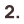
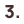
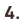

Cinema Le Moliere
Le projet
Le cinéma Le Molière, c'est une salle où j'ai grandi, où mon père va encore chaque semaine, et où j'ai vu s'éteindre peu à peu la file d'attente au profit des grandes chaînes.
Le jour où un proche, habitué de toujours, n'a plus su comment consulter le programme ni réserver sa place, j'ai compris qu'il fallait agir. En une semaine, par attachement pour ce lieu chargé d'histoire, chaleureux et unique en son genre, je me suis lancé un défi personnel : lui offrir le rebranding et le site qu'il méritait, pour qu'il continue à faire vivre le cinéma à Pézenas, la ville de Molière.
La conception
Analyse du contexte et des besoins utilisateurs
J'ai identifié deux cibles aux attentes différentes : les habitués, attachés au cinéma mais en difficulté avec le digital, et les jeunes, moins familiers du lieu et peu attirés par son image actuelle.

Recherche de références et d'inspiration
J'ai exploré l'identité de Molière et son ancrage à Pézenas, ainsi que les tendances UI/UX des sites de cinémas, pour nourrir une direction artistique à la fois locale et contemporaine..

Création d'une identité de marque
Après plusieurs itérations, j'ai défini un logo, une palette de couleurs et une direction artistique capables de faire cohabiter l'héritage historique du lieu avec une image plus fraîche et moderne.

Conception de l'expérience utilisateur du site
J'ai enfin conçu les maquettes pensées pour être accessibles et ergonomiques pour les habitués, tout en séduisant un public plus jeune, avec un parcours utilisateur simplifié pour trouver la programmation et acheter ses billets.